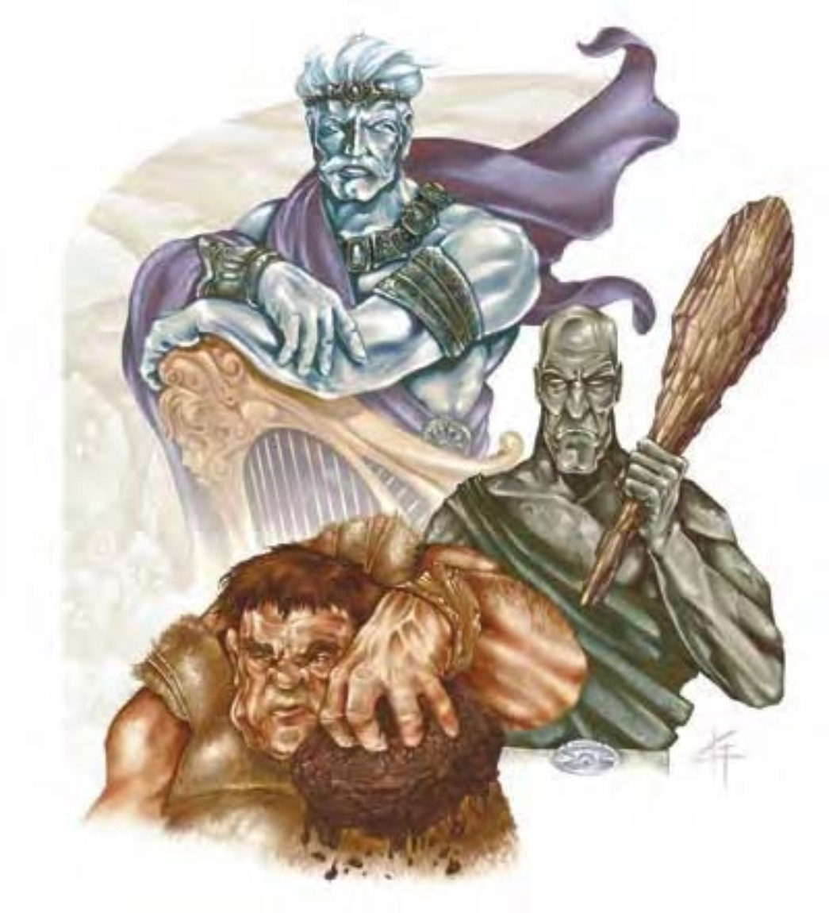

| 资料栏位 | 云巨人 (Cloud Giant) 超大型巨人（风系） |
| 生命骰 | 17d8+102（178HP） |
| 先攻 | +1 |
| 速度 | 50英尺（10格） |
| 防御等级 | 25（-2体型、+1敏捷、+12天生、+4炼甲衫）、接触9、措手不及24 |
| 基本攻击/擒抱 | +12 / +32 |
| 攻击 | 巨型钉头锤+22近战（4d6+18）；或挥击+22近战（1d6+12）；或掷石+12远程（2d8+12） |
| 全力攻击 | 巨型钉头锤+22/+17/+12近战（4d6+18）；或2挥击+22近战（1d6+12）；或掷石+12远程（2d8+12） |
| 占据/触及 | 15英尺 / 15英尺 |
| 特殊攻击 | 掷石、类法术能力 |
| 特殊能力 | 昏暗视觉、特大武器、接石、灵敏嗅觉 |
| 豁免 | 强韧+16、反射+6、意志+10 |
| 属性 | 力量35、敏捷13、体质23、智力12、感知16、魅力13 |
| 技能 | 攀爬+19、手艺（任一）+11、交涉+3、威吓+11、聆听+15、表演（竖琴）+2、察言观色+9、侦察+15 |
| 专长 | 震山击、顺势斩、精通冲撞、精通闯越、钢铁意志、猛力攻击 |
| 环境 | 温带山脉 |
| 组织 | 单独、成队（2-4）、一家（2-4，加上35%非战斗人员、1个4-7级术士或牧师，及2-5个狮鹫或2-8只凶暴狮）或一团（6-9，加上1个4-7级术士或牧师，及2-5个狮鹫或2-8只凶暴狮） |
| 挑战级数 | 11 |
| 宝藏 | 标准钱币、双倍宝物、标准物品 |
| 阵营 | 通常中立善良或中立邪恶 |
| 进化 | 视人物职业而定 |
| 等级修正值 | ― |
云巨人的外形跟人类相差不多，肌肉发达而且五官俊美，皮肤呈现偏蓝的乳白色，头发银白。
云巨人眼高于顶，鄙视其他所有生物，唯有风暴巨人例外，他们将其视为同类。云巨人创造力丰富，欣赏优美的事物，同时也是出色的战略家。
云巨人的肤色从乳白到天蓝都有，头发可能是银白或黄铜色，眼睛则闪烁着亮蓝色光芒。成年男性身高约18英尺，重达5000磅。女性身材略矮体重稍轻。云巨人平均年龄约400岁。
云巨人的衣着非常华贵，也会佩带珠宝。对他们来说，外貌就是地位象征，只有最重要的人物才能穿着华服，佩带名贵的珠宝。他们也热爱音乐，多半都能弹奏一两项乐器（竖琴是最流行的）。
与其他巨人不同，云巨人通常会把宝藏留在家中。云巨人的袋子里有食物、1d4+1颗石块、3d4件非魔法物品、一些现金（最多10d10枚钱币）和乐器。云巨人拥有的物品通常手工细致而且保存良好。
战斗云巨人战斗时非常有组织，也会仔细拟定作战计划。他们偏好从高处发动攻势，常见的战术是把敌人团团围住，从高处用石头猛力轰炸敌人，具有施法能力的成员也会同时施展法术攻击。
掷石（特异）：云巨人掷石的射程单位为140英尺。
特大武器（特异）：云巨人可以双手持用特大的钉头锤（可供巨型生物使用的武器），不会受到任何减值。
类法术能力：每天3次――"浮空术"（自己再加上2000磅）、"隐雾术"；每天1次――"云雾术"。施法者等级15。
大多数云巨人都栖息在云雾缭绕的山脉顶端，建筑粗旷的城堡当作居所。虽然各个部族人口不多，但都知道附近另外1d8个部族的位置，有庆典、战斗或交易时才会聚集起来。
善良阵营的云巨人会跟其他人形生物的聚落进行交易，买卖食物、酒、珠宝和服饰。有时候彼此关系非常密切，甚至会在危急时出兵搭救。邪恶阵营的云巨人则会劫掠其他聚落，以抢夺为生。
在古老的传说中，少数云巨人会在云上的魔法岛屿建筑城堡，不跟其他生物往来，甚至云巨人同类也一样。据说这些云中岛屿美得难以置信，有种满果树的巨大花园。
云巨人的人物云巨人的组织中多半都会有一名术士或牧师。善良阵营的牧师可由下列领域择二：善良、医疗、力量或太阳。邪恶阵营的牧师可由下列领域择二：死亡、邪恶或诡术。